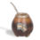

De: La Frikipedia, la enciclopedia extremadamente seria.
De: La Frikipedia, la enciclopedia extremadamente seria. De: La Frikipedia, la enciclopedia extremadamente seria.
El Himno Nacional Argentino, es el himno nacional de... ¿Alemania? Eeeeh, no... Australia!... No!... Aaaaah, es el de Argentina... ¿Es el de Argentina cierto? Ok, vamos a empezar a escribir el artículo o si no me van a cagar a puteadas.
Debido a que la canción debía representar a su gente, fue difícil de concebir algo tan horrible, pero un viejo llamado Blas Parera hizo un buen trabajo al componer la música... o al menos lo intentó.
Mientras el viejo anterior se golpeaba la cabeza contra un escritorio para ver si se le ocurría una buena melodía, otro viejo llamado Vicente Lopez y Planes para viajar a Chile y que así no me jodan para crear este himno de mierda se dedicó a elaborar una buena letra para la canción.
La flatulencia pone al mundo a andar:
La versión original, osea la primera de todas, era más larga que el Quijote (imaginate cantando durante 9 minutos y entenderás de qué te hablo) y la estrofa de apertura del himno era ni más ni menos que esta:
Oíd mortales, los pedos que nos tiramos:
Prrrrrrrrrrrr! Prrrrrrrrrrrr! Prrrrrrrrrrrrrrr!
Se originaron incidentes con demasiada facilidad después de que esta versión se promulgara ya que muchas personas se tiraban pedos con premio que los comprometían en una situación bastante embarazosa, y además, muchas de las personas del lugar le hacían honor a la palabra "mortales", ya que se morían intoxicados por la flatulencia mucho antes de que la canción llegase a su gran final.
Vamos de putas, carajo!:
Después de ese fracaso, López se adignó a volver a intentarlo y esta vez tener éxito. Creó una versión por completo diferente, que ya nadie recuerda, debido a que el sonido era tan feo que hasta los que la cantaban se desmayaban al oírla y algunos hasta quedaban sordos. El comienzo, la única parte aún conocida, era más o menos así:
Oíd mortales, nos vamos a este sitio:
Cabaré! Cabaré! Cabaré!
La idea que planteaba la letra era muy atractiva pero nunca pudo llevarse a cabo por lo señalado anteriormente.
Joder, si esta versión no les gusta, me la corto:
Una vez más desepcionado, pero aún con esa molesta perseverancia que hacía que todo el mundo deseara arrancarle los cojones esperanzas de poder hacer algo medianamente decente, comenzó a componer una nueva versión, la más atrevida, la más osada, la más agresiva y la más chocante de todas:
Oíd cabrones, ya me tienen podrido:
Conformensé! Conformensé! Conformensé!
Pues si no quieren les corto la verga
Y después me la corto yo!
Esta versión no les gustó un carajo, así que Vicente cumplió con su promesa de cortarse la pinga y después intentó cortársela a todos los oyentes del lugar, pero lo mataron brutalmente y lo enterraron en una cuneta, no sin antes meterle su propio pene en la boca.
La Mano de Dios:
Después de varios años de la muerte del primer autor, el país se quedó sin una marcha patriótica, y todos los argentinos quedaron colgados de pelotudos por no tener nada que cantar cuando los países limítrofes sí tenían. Argentina era víctima de burlas e insultos, hasta que llegó un héroe para salvar a la nación (y al mundo de las afiladas garras de Holanda y Alemania). Un ser llamado Maradroga, quien inició la época futbolística de Argentina y escribió la version oficial:
Oíd mortales, el nombre sagrado:
Maradóna! Maradóna! Maradóna!
Oíd el ruido de las bubuzelas
Ved en banca al borracho del Diego!
Ya a sus piés, ligerísimos, se metieron
Los golazos del 86'
Y los libres del mundo responden:
"Al drogado de Diego, salud!"
No obstante, en 1990 cuando llegó Menem al poder, esta versión fue suprimida y reemplazada por una solapa de muy mal gusto, cuyo nombre es "Himno Nacional Argentino", ya que sus autores querían demostrar lo creativos que son para ponerle nombre a las cosas.
La primera versión de la música que hizo Blas Parera (que era un metalero) obviamente era rock heavy metal, pero como a muchos no les gustó nada eso, se inventaron varias otras versiones (cosa que no le gustó a Parera).
Creada en el siglo XX (osea, cuando los militares hijos de mil puta no dejaban de romper las pelotas a todo el mundo con sus continuos golpes de estado) se elaboró una versión al estilo de "marcha" con tubas, flautas, platos, tambores y clarinetes, lo que la hacía parecer una maldita música de circo. Esta fue la causa por la cual el creador original murió de un infarto en cuanto la escuchó.
¿Tan boludo sos que hace falta que te diga que la versión electrónica se hizo con sonidos electrónicos?¿Si? Bueno, te lo voy a decir entonces: la versión electrónica se hizo con sonidos electrónicos cuando llegaron esos pequeños avances tecnológicos. Esta versión no parecía la música usada por un montón de fenómenos circenses mal pagados durante sus actos, pero si parecía la tonadita de un videojuego de Mario Bros., así que se deshicieron de ella (y yo que quería jugar al Mario, carajo).
Como los mapuches también son argentinos (al menos eso creo), crearon su propia con kenas (me agarraste), flautas (me agarraste también) y bombos (también me los agarraste) que es notablemente mejor que las dos versiones anteriores.
No, no es la que los milicos elaboraron mientras vos estabas metido en cana, es la versión que se toca actualmente, que es una mezcla rara de sonidos electrónicos con sonidos instrumentales, es un poco tortuoso tener que oírla pero no queda de otra, en especial en la escuela. Por desgracia se sigue cantando con esa letra aburrida que reemplazó a la escrita por Maradona.
|  | |||||
|
Personalidades
Fulbo
Clubes
Jugadores
Otros
Políticos
Tribus urbanas
Televisión y Cine
Música
Geografía
Otros
| |||||
Autor(es):